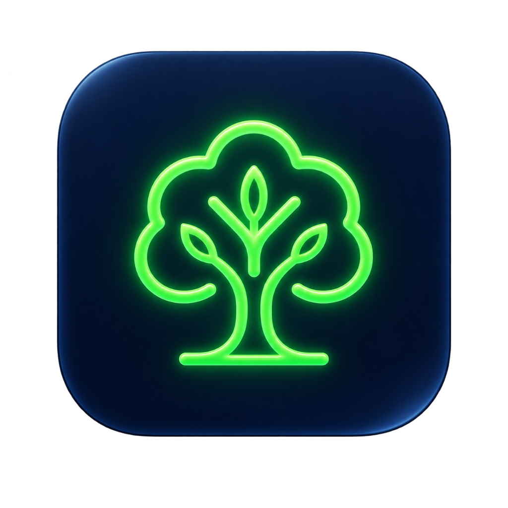

Complaint Updated
4:22 PMRoadside Garbage · Cleaning in progress

WesteRoute Liquid Glass PreviewSelect your role to continue to WesteRoute.
Report city cleanliness issues, track complaints and stay connected with your local services.
Access assigned collection tasks, routes and daily work updates.
Sign in with Google or your email & password.
Join WesteRoute to keep your city clean.
Sign in to access your assigned work.
Enter your registered email address to receive a secure password reset code.
We sent a 6-digit code to:
user@example.com
Create a strong new password for your WesteRoute account.
Your password has been updated securely. You can now sign in to your WesteRoute account with your new credentials.
Cleaner today than yesterday
Spot garbage? Help us clean it faster.
12 total · 2 active in progress
12 around you
Verify pickup
3 new updates in SRM KTR Green Ward 04
Scan the worker's QR after collection to confirm doorstep service and maintain verified neighborhood records.
You're actively helping improve sanitation in your neighborhood.
Your complaint #WR-2048 is currently being handled by Cleaning Team 07.
Roadside Garbage · Cleaning in progress
Household collection confirmed with Team 03
Overflowing Bin · Java Block verified resolved
✓ No Duplicate or Fake Image Detected
Add both before and after photos to verify and complete this task.
Show this QR to residents after household waste collection to confirm doorstep service.
6 of 8 tasks handled on time
A roadside garbage complaint near SRM Tech Park has been assigned to you (850 m away).
Task #WR-2055 near Potheri Main Road has been marked URGENT.
A resident in Potheri Residential Area confirmed doorstep collection.
Ask the resident to scan this QR after waste collection is completed.
Select the new field status for complaint #WR-2048
to continue to WesteRoute Citizen Portal
To continue, Google will share your name, email address, and language preference with WesteRoute. Review WesteRoute's Privacy Policy and Terms of Service.